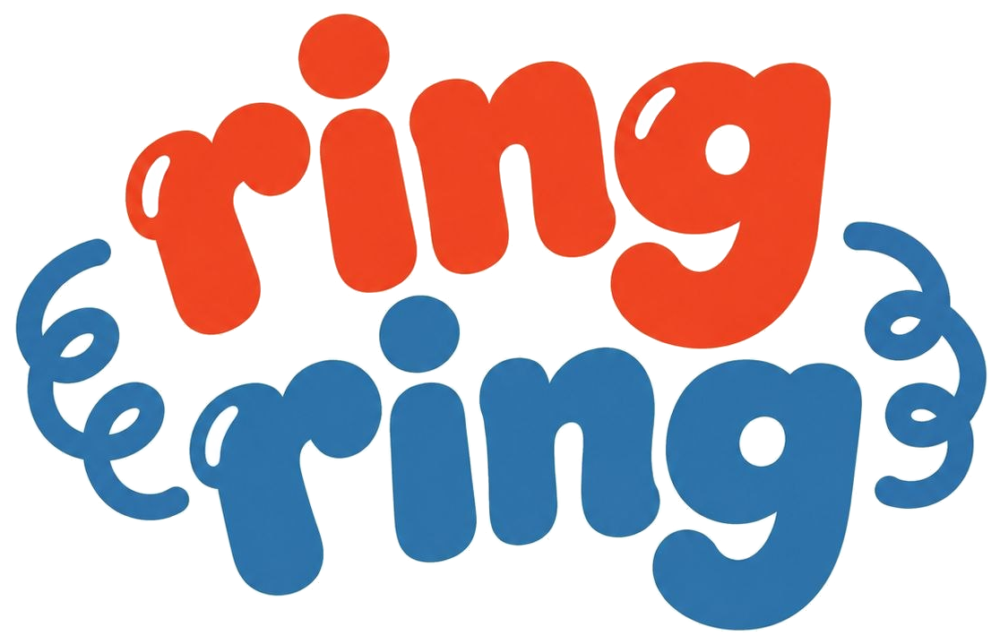

Ένα αληθινό τηλέφωνο, μόνο για παιδικές φωνές.
Το Ring Ring μπαίνει στην πρίζα, συνδέεται με ένα απλό ενσύρματο τηλέφωνο και αφήνει τα παιδιά να καλούν τους φίλους τους — χωρίς γονιό στη μέση, χωρίς οθόνη, μόνο φωνή και γέλια.
Είναι ένα μικρό κουτί που μπαίνει ανάμεσα στην πρίζα και σε ένα κανονικό τηλέφωνο. Κάθε συσκευή παίρνει τον δικό της αριθμό — σαν μυστικό κωδικό ανάμεσα σε φίλους. Τα παιδιά σηκώνουν το ακουστικό, ακούν τόνο κλήσης, καλούν έναν φίλο — όπως τα τηλέφωνα παλιά, φτιαγμένο σήμερα. Χωρίς app στο κινητό, χωρίς λογαριασμό να θυμούνται.
Μπες στη λίστα αναμονής Η εγγραφή ανοίγει πολύ σύντομα — γύρνα ξανά.